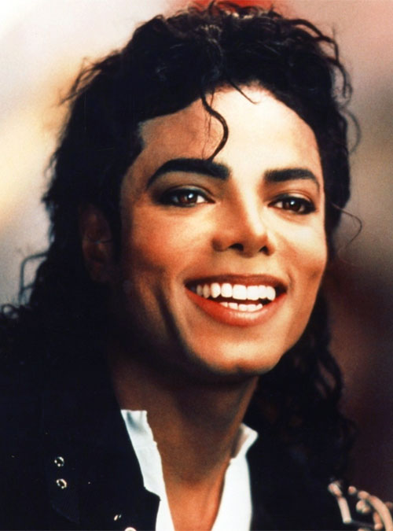

Michael Joseph Jackson nacque alle 19:33 del 29 agosto 1958 al St. Mary's Mercy Hospital di Gary,
in Indiana, ottavo dei nove figli di una modesta famiglia afroamericana.
La madre Katherine Esther Scruse, commessa in un supermercato Sears, era dal 1963 una devota testimone
di Geova ed era solita cantare con i figli. Il padre Joseph Jackson era operaio in un'acciaieria
della United States Steel e in gioventù era stato il chitarrista dei Falcons, gruppo R&B amatoriale.
Michael aveva tre sorelle, Rebbie, La Toya, Janet, e sei fratelli, Jackie, Tito, Jermaine, Marlon, Brandon
(fratello gemello di Marlon, morto 24 ore dopo la nascita) e Randy.
La famiglia Jackson visse per lungo tempo in una piccola casa di mattoni a Bowmont Drive,
all'indirizzo 2300 Jackson Street. Michael e i suoi fratelli crebbero in un ambiente familiare
dove la Bibbia era l'unico strumento di formazione, la cui trasgressione implicava severe punizioni:
secondo diverse testimonianze i fratelli Jackson, in particolare Michael, erano sovente maltrattati dal
padre e costretti a prove incessanti oltre che a violenze fisiche. Il rapporto di Michael nei confronti del
padre sarà al centro dell'attenzione mediatica lungo tutta la sua carriera.
 Il 25
giugno 2009, 18 giorni prima dall'inizio dei concerti di Londra, mentre si trovava in una villa presa in affitto a Holmby
Hills a Los Angeles, Jackson morì a causa di un arresto cardiaco in seguito a un'intossicazione acuta da propofol,
un potente anestetico somministratogli da un medico sotto contratto con la AEG, la società produttrice dei concerti di Londra,
tale Conrad Murray. Negli ultimi anni il cantante soffriva d'insonnia cronica e alcuni medici gli somministravano questo
anestetico per tentare in modo fallace di farlo riposare, dato che gli anestetici non inducono il sonno, come dichiarato
sotto giuramento da alcuni medici esperti nelle cure del sonno sentiti come testimoni al processo che ne seguì.
La morte di Michael Jackson è stata definita "l'evento mediatico più grande di sempre" e molti siti internet andarono
in crash sotto il peso delle continue ricerche riguardanti l'artista.La cerimonia funebre pubblica tenutasi il 7 luglio
allo Staples Center venne seguita da un'audience stimata tra i 2,5 e i 3 miliardi di persone in tutto il mondo, rendendola
la trasmissione televisiva e l'evento in streaming-on line più visto della storia.
Il 3 settembre successivo venne organizzata una cerimonia funebre in forma privata al Forest Lawn Memorial Park di
Glendale, il cimitero delle celebrità, dove il corpo di Jackson è stato sepolto.
L'eredità di Jackson (circa 1 miliardo di dollari con circa 500 milioni di debiti) andò a sua madre Katherine, ai tre figli
e a delle associazioni benefiche. Niente al padre, a causa dei dissensi tra i due.
Il 25
giugno 2009, 18 giorni prima dall'inizio dei concerti di Londra, mentre si trovava in una villa presa in affitto a Holmby
Hills a Los Angeles, Jackson morì a causa di un arresto cardiaco in seguito a un'intossicazione acuta da propofol,
un potente anestetico somministratogli da un medico sotto contratto con la AEG, la società produttrice dei concerti di Londra,
tale Conrad Murray. Negli ultimi anni il cantante soffriva d'insonnia cronica e alcuni medici gli somministravano questo
anestetico per tentare in modo fallace di farlo riposare, dato che gli anestetici non inducono il sonno, come dichiarato
sotto giuramento da alcuni medici esperti nelle cure del sonno sentiti come testimoni al processo che ne seguì.
La morte di Michael Jackson è stata definita "l'evento mediatico più grande di sempre" e molti siti internet andarono
in crash sotto il peso delle continue ricerche riguardanti l'artista.La cerimonia funebre pubblica tenutasi il 7 luglio
allo Staples Center venne seguita da un'audience stimata tra i 2,5 e i 3 miliardi di persone in tutto il mondo, rendendola
la trasmissione televisiva e l'evento in streaming-on line più visto della storia.
Il 3 settembre successivo venne organizzata una cerimonia funebre in forma privata al Forest Lawn Memorial Park di
Glendale, il cimitero delle celebrità, dove il corpo di Jackson è stato sepolto.
L'eredità di Jackson (circa 1 miliardo di dollari con circa 500 milioni di debiti) andò a sua madre Katherine, ai tre figli
e a delle associazioni benefiche. Niente al padre, a causa dei dissensi tra i due.